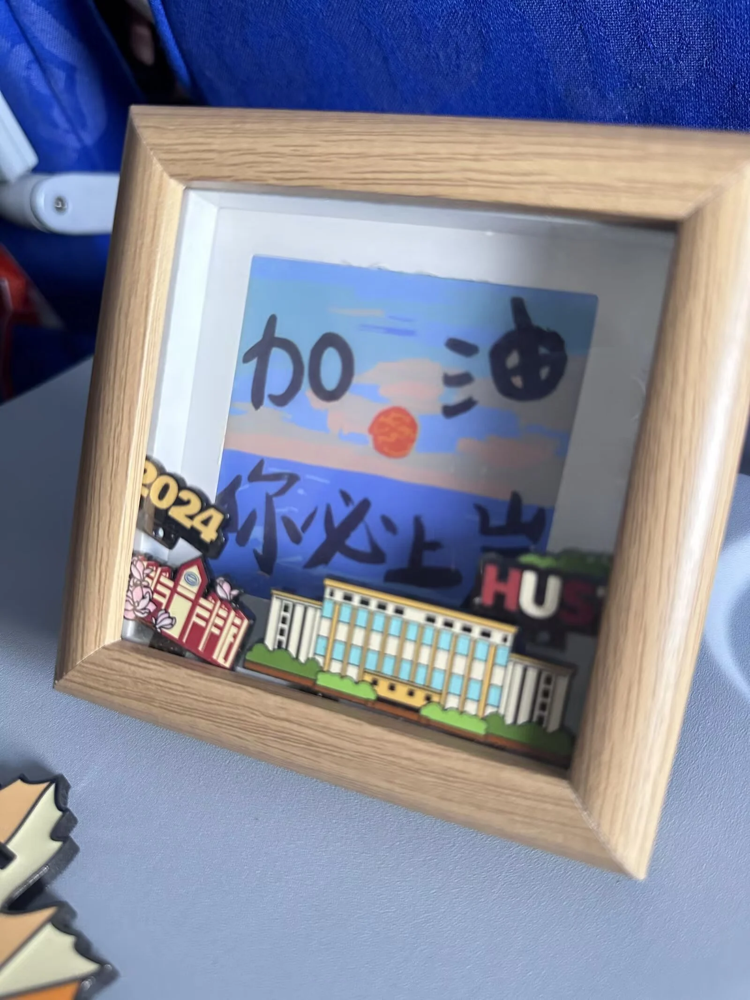
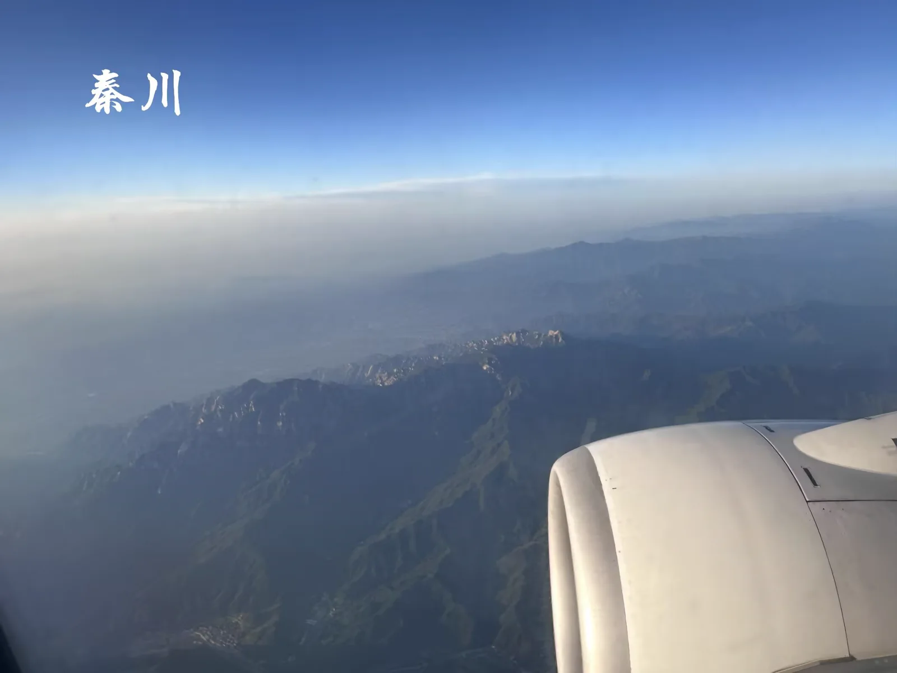
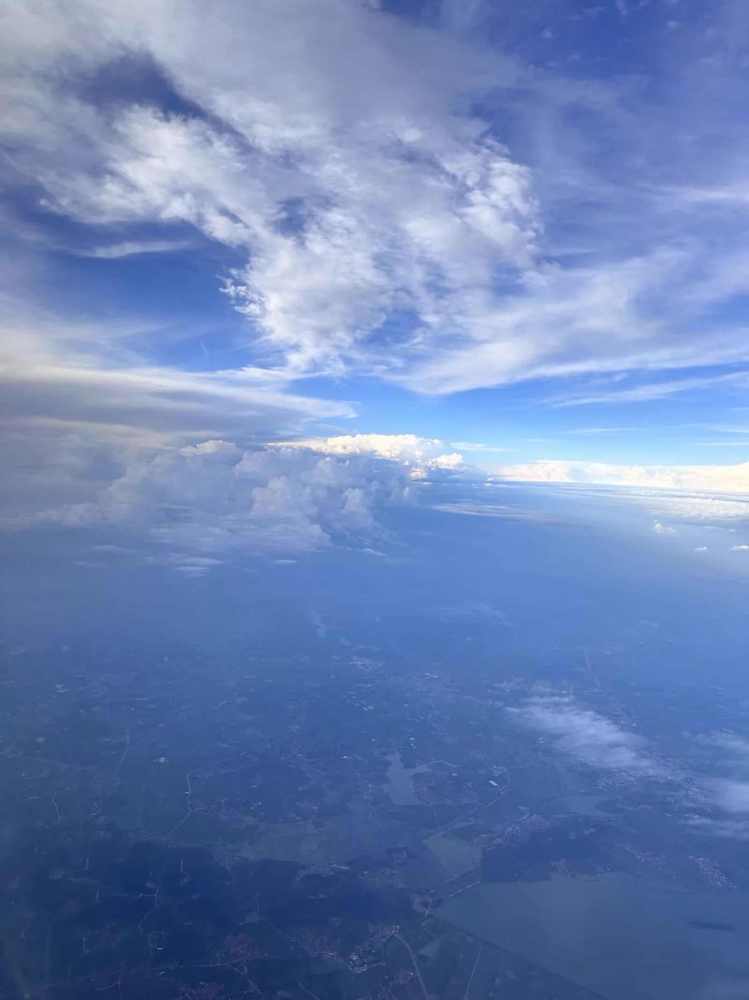
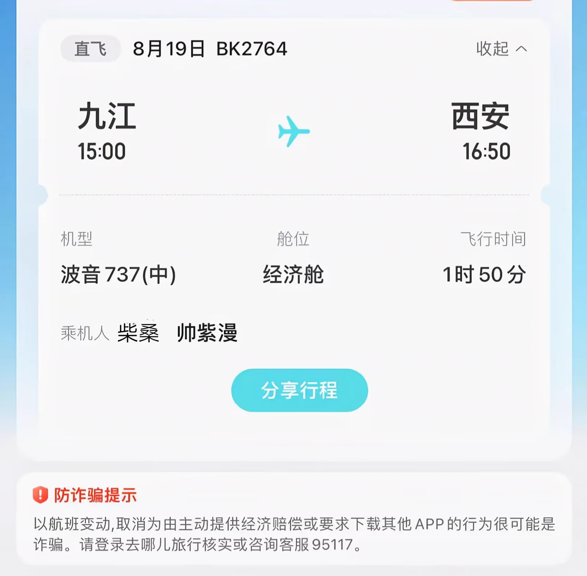

Journal · 2024-08-20
江西省九江市柴桑区庐山机场，陕西省西安市新城区，晟洛栖酒店
浔阳江头，列车北上，蓦然回首，方知⋯⋯世界这么大，我想去长安！
From the banks of the Xunyang the train heads north; turning to look back, I realize at last... the world is so vast — I want to go to Chang'an!
Du bord du Xunyang, le train file vers le nord ; en me retournant, je le comprends enfin... le monde est si vaste, je veux aller à Chang'an !
Am Ufer des Xunyang bricht der Zug nach Norden auf; als ich mich umdrehe, wird mir klar … die Welt ist so groß, ich will nach Chang'an!



